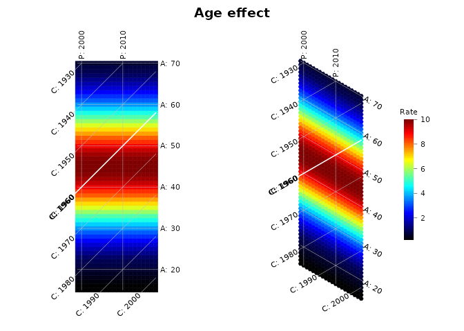
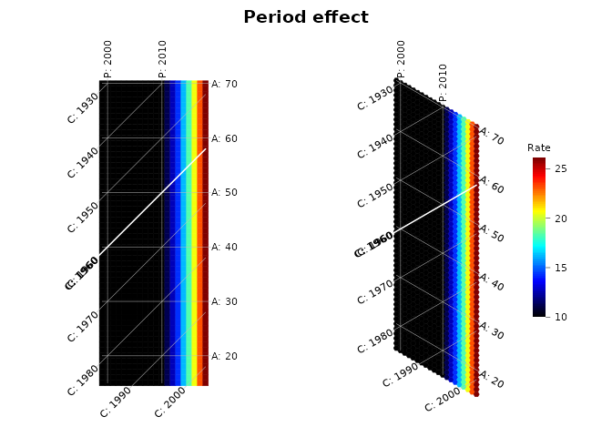
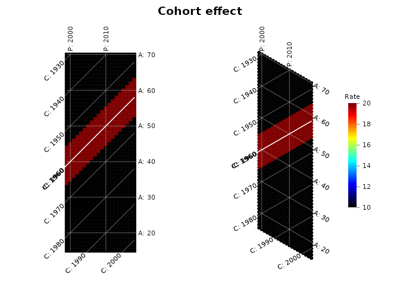
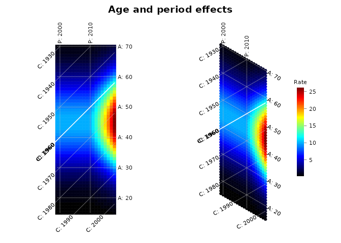
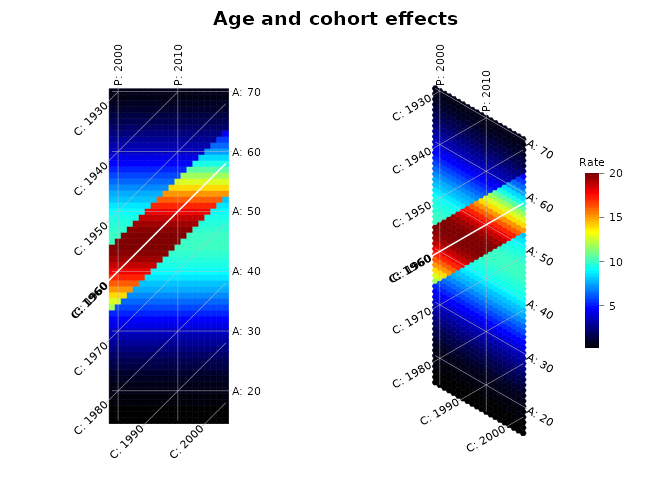
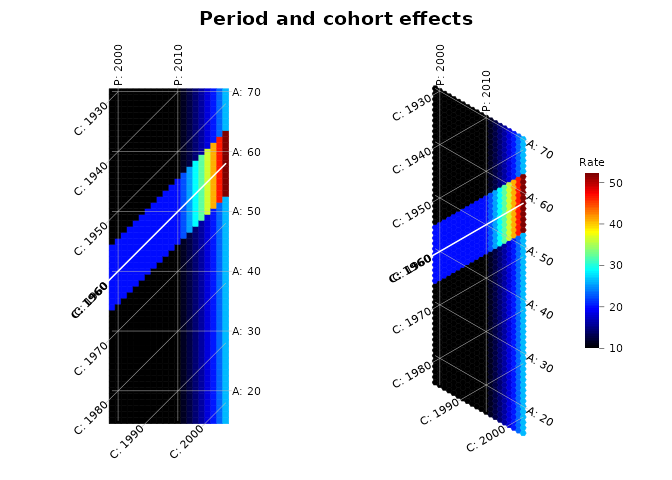
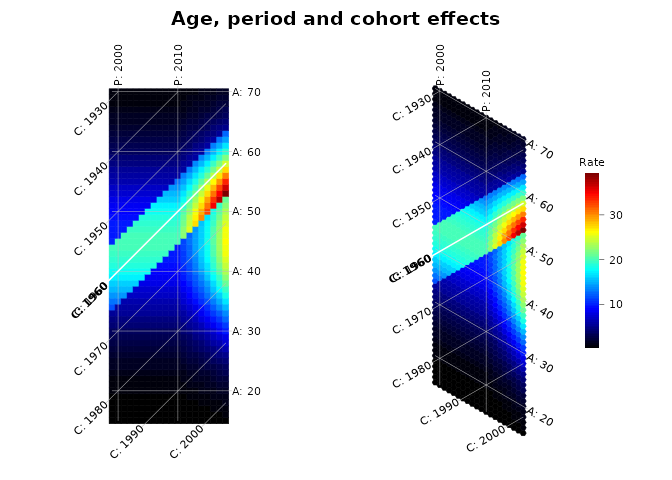
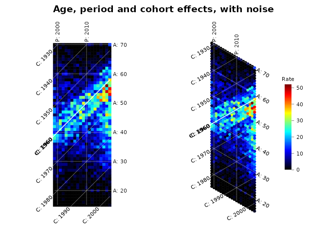

This vignette shows what age, period and cohort effects look like on
a hexamap and on a traditional Lexis diagram, alone, in pairs, and all
three together. The rates are simulated with simulate_apc()
from a log-linear model,
where , and are the age, period and cohort effects on the log scale (log rate ratios).
The effects
Each effect has a shape that is easy to tell apart from the others:
- Age: rates peak at age 45.
- Period: rates rise steeply after 2010, as in an epidemic.
- Cohort: people born between 1955 and 1965 have twice the risk of other cohorts.
ages <- 15:70
periods <- 1999:2018
age <- function(a) -((a - 45) / 15)^2
period <- function(p) 0.12 * pmax(p - 2010, 0)
cohort <- function(c) ifelse(c >= 1955 & c <= 1965, log(2), 0)Each pattern below is shown as a Lexis diagram (left) and a hexamap (right), with the 1960 birth cohort highlighted. Each figure uses its own color scale.
How to read the isolines
- Age effects follow the age isolines: on a hexamap they slope down to the right (−30°); on a Lexis diagram they are horizontal.
- Period effects follow the period isolines, which are vertical on both.
- Cohort effects follow the cohort isolines: on a hexamap they slope up to the right (+30°); on a Lexis diagram they are diagonal (45°).
On a hexamap the three directions are equally spaced, so a cohort band is as easy to follow as an age or period band.
One effect
compare(simulate_apc(ages, periods, age_effect = age), "Age effect")
compare(simulate_apc(ages, periods, period_effect = period), "Period effect")
compare(simulate_apc(ages, periods, cohort_effect = cohort), "Cohort effect")
The cohort band is the same width as the others on the hexamap, while on the Lexis diagram it is narrower across and drawn as a staircase of squares.
Two effects
compare(simulate_apc(ages, periods, age_effect = age, period_effect = period),
"Age and period effects")
compare(simulate_apc(ages, periods, age_effect = age, cohort_effect = cohort),
"Age and cohort effects")
compare(simulate_apc(ages, periods, period_effect = period, cohort_effect = cohort),
"Period and cohort effects")
All three effects
apc <- simulate_apc(ages, periods, age_effect = age, period_effect = period,
cohort_effect = cohort)
compare(apc, "Age, period and cohort effects")
Real data are noisy. With Poisson counts for 50,000 people per cell, the three effects are still visible:
set.seed(2020)
noisy <- simulate_apc(ages, periods, age_effect = age, period_effect = period,
cohort_effect = cohort, population = 5e4)
compare(noisy, "Age, period and cohort effects, with noise")
What a hexamap cannot show
Because cohort = period − age, linear trends in age, period and cohort cannot be separated: this is the APC identification problem. For example, a linear increase with age and period gives exactly the same rates as a steeper linear increase with age plus a linear increase with cohort:
ap <- simulate_apc(ages, periods,
age_effect = function(a) 0.02 * a,
period_effect = function(p) 0.02 * p)
ac <- simulate_apc(ages, periods,
age_effect = function(a) 0.04 * a,
cohort_effect = function(c) 0.02 * c)
all.equal(ap, ac)
#> [1] TRUENo display can tell these apart. A hexamap shows departures from linearity, such as the peak, the surge and the high-risk cohorts above, without distorting any of the three directions. Estimating the separate effects needs an APC model with an identifying assumption.